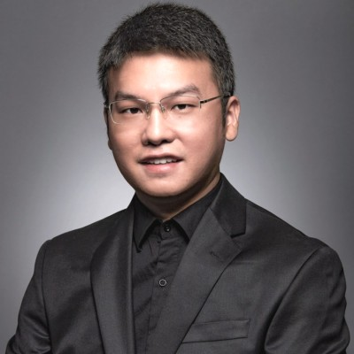

Pengyu (Perry) Fu
Senior researcher working at the intersection of power, AI, and aerospace & space.
- Research Scientist, Center for High Performance Power Electronics, Department of Electrical and Computer Engineering, The Ohio State University
Google Scholar·LinkedIn·GitHub
Papers and preprints — a searchable, tag-organized database of 55 works (16 journal, 33 conference).
Biography and CV — a short bio and a short CV; full CV on request.
Research projects — 4 active and 7 total sponsored and collaborative programs.
Talks and engagements — upcoming engagements and a log of 13 past tutorials and invited talks.
Profiles, mentions and links — Google Scholar, LinkedIn and GitHub profiles, and other links.
Contact and policies — how to reach me, and how I handle requests.
Research programs (4 active)
- 2024– Bidirectional switches: from devices to converters
- 2022– Wide- and ultra-wide-bandgap power devices: characterization, ruggedness and gate drive
- 2021– Insulation and partial discharge for electrified aircraft
- 2022– High-gain DC-DC converters for grid-tied energy storage · U.S. DOE Office of Electricity, Energy Storage Program
Selected publications (9)
- 2026 1.5-kV 1.5-kW DC Power Transmission with MMC-based High-Gain Isolated DC/DC Converters for Lunar Surface Applications · IEEE Transactions on Power Electronics
- 2026 Switching Loss Characterization and Transient Modeling of 3.3-kV SiC Bidirectional FETs: Monolithic Versus Discrete Architecture · IEEE Transactions on Power Electronics
- 2026 Design for high voltage · Aviation Electrification, B. Sarlioglu, P. Wheeler and T. Yang (Eds.), Elsevier
- 2025 2-kV 1-MW 20000-r/min integrated modular motor drive for electrified aircraft propulsion · IEEE Journal of Emerging and Selected Topics in Power Electronics — First Place Prize Paper Award, IEEE JESTPE (2026)
- 2025 Physics-Informed Neural Networks for Insulation Power Loss Estimation of Aircraft Wiring Under PWM Voltage · 2025 IEEE/AIAA Transportation Electrification Conference and Electric Aircraft Technologies Symposium (ITEC+EATS)
- 2024 Insulation capability at 10 kV, >300 V/ns of a nonlinear resistive polymer nanocomposite field-grading coating in a 15-kV silicon carbide module · IEEE Transactions on Power Electronics
- 2021 Partial discharge inception characteristics of twisted pairs under single voltage pulses generated by silicon-carbide devices · IEEE Transactions on Transportation Electrification
- 2019 Partial discharge measurement and analysis in PPIs · IET Power Electronics
- 2018 The role of time-lag in the surface discharge inception under positive repetitive pulse voltage · Physics of Plasmas
Teaching (5)
- Spring 2025 ECE 5047 · High Voltage Engineering and Laboratory (lecturer)
- Autumn 2024 Power Electronics for Automotive Applications — Stellantis short course (instructor)
- Autumn 2023 Power Electronics for Automotive Applications — Stellantis short course (instructor)
- Spring 2023 ECE 5047 · High Voltage Engineering and Laboratory (lecturer)
- Autumn 2022–23 ECE 5244 · Si and Wide Band Gap Power Devices (guest lecturer)
Professional service (5)
- 2026 Track Chair — Battery Chargers · IEEE ITEC+EATS
- 2025 Track Chair — Design & Optimization for Electrified Airplane, Sea & Undersea Transportation · IEEE ITEC+EATS
- 2025 Proposal reviewer, SBIR/STTR Programs · U.S. Department of Energy, Office of Science
- 2023 Topic Chair, Electrified Aircraft; Session Chair (2 sessions) · IEEE ECCE
- 2022– Reviewer · IEEE TPEL, JESTPE, TTE, OJ-PEL, TIE; APEC, ECCE, ITEC